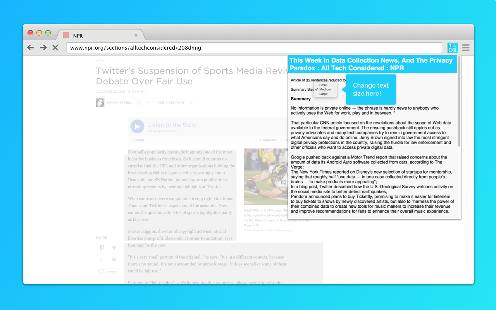

TL;DR | Google Chrome Extension


TL;DR can be describe as "SparkNotes but for web articles!" It summarize any article by just (1) highlighting the text and (2) clicking "TLDR". Adjust the "Summary Size" settings to scale the length of the summaries to your liking. Perfect for those long news/social articles that no one has time to read!
My role in this project consisted of building the actual Google Chrome extension itself. This involved learning JavaScript on the spot and utilizing Content Scripts to interact with the web-page in order to pull the highlighted text into our alogorithm. I also helped develop the "popularity" algorithm that determines which sentences best summarizes the article. A quick description of the algorithm:
- Parses the article into words and sentences.
- Assigns "popularity" points to each occurance of a word and if that word occurs in the title.
- Sentence "popularity" is then formed from the sum of those words' values.
- Return a certain percanatage of the most highly ranked sentences in chronological order.

